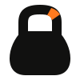
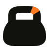

01 · Поза к позе
Один набор действий. B Медведь
Круглые уши, широкое тело, светлая морда и живот.
L Рысь
Кисточки ушей, угловатые щёки и короткий хвост; без пятен.
Привет Медведь. Стоит и машет лапой; гиря рядом. Рысь. Стоит и машет лапой; гиря рядом. Тренируемся Медведь. Две лапы на ручке, гиря поднята перед корпусом. Рысь. Две лапы на ручке, гиря поднята перед корпусом. Отдых Медведь. Сидит рядом с гирей, глаза закрыты. Рысь. Сидит рядом с гирей, глаза закрыты. Ждём Медведь. Сидит, наклонив голову; лапа лежит на ручке гири. Рысь. Сидит, наклонив голову; лапа лежит на ручке гири. Полные исходные листы: B · медведь L · рысь
02 · Постоянные признаки
Силуэт и лицо. Силуэты без деталей Медведь. Круглые уши. Рысь. Уши с кисточками и угловатые щёки. Головы с листов Медведь. Круглые уши. Рысь. Уши с кисточками и угловатые щёки. 03 · Pillow Lanczos
24, 48 и 96 пикселей. Голова и полная фигура вырезаны именно из позы «Привет». Каждый PNG показан в натуральном размере, на бумаге и белом.
B
Медведь Голова из «Привет»
Фигура без отдельно стоящей гири
L
Рысь Голова из «Привет»
Фигура без отдельно стоящей гири
Миниатюры не дорисованы. Читаемость вида животного и его характера с пользователями не проверялась.
04 · Самостоятельный SVG-знак
Гиря для иконки. Без глаз и числа. Два контура, один Ember-акцент на ручке. Светлый и тёмный варианты по 60 × 60 px.

K1 · Классическая Высокая ручка с большим просветом и округлое тело.

K2 · Коренастая Широкое тело, более низкая и толстая ручка.
05 · Клиент, 375 px
Вместо исходной иллюстрации. Чистый демосценарий «Пусто». В программе маскот заменяет блокнот; на главной — значок календаря. Остальные элементы и размеры карточек сохранены.
Экраны: с маскотом Это наложения на реальные снимки, а не внедрение маскота в приложение. Подписи и кнопки не перекрыты. На главной размер ограничен исходным местом значка: детали лица и число на гире там теряются.
Наблюдения
Выбор остаётся открытым. Полные замечания по стилю, постоянству персонажей, малым размерам и ограничениям проверки собраны в отчёте.
Прочитать NOTES.md